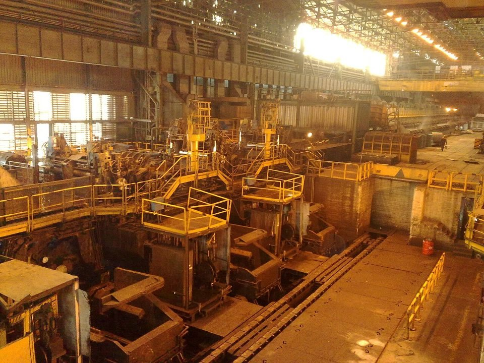
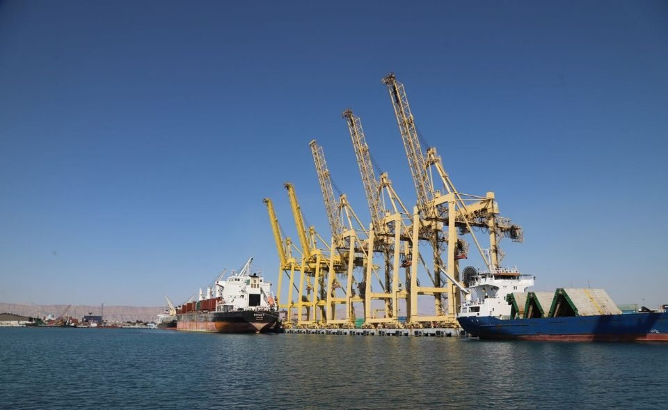
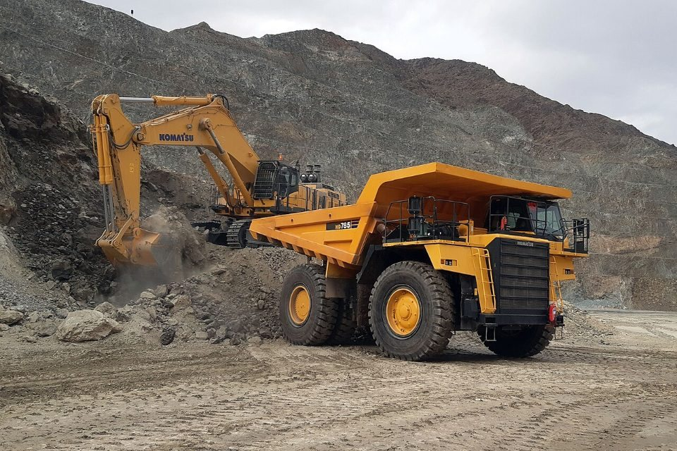

GLOBAL MILLS · IRAN · 2026.09
伊朗鋼鐵 9 月觀察：戰火七個月，中東產量降幅收斂，鋼胚出口改走陸路
鋼鐵潮流工作室 · 發布 2026.10.11

本期重點
美國與以色列 2 月 28 日空襲伊朗，伊朗鋼鐵業成為攻擊目標之一。3 月 27 日，全國最大的兩座鋼廠 Mobarakeh 與 Khuzestan 遭空襲，Mobarakeh 在 4 月初第二次被擊中後全面停產，中東地區 3 月粗鋼產量年減 33.5%。七個月後，產量降幅已收斂到 8 月的 4.6%，但荷莫茲海峽航運仍不穩、國內電力與天然氣短缺，伊朗鋼廠改把鋼胚優先賣給國內與陸路買家，海運出口仍然受限；鐵礦方面，最新可得的 6 月資料也顯示海運出口幾近停擺。
- 兩大鋼廠受創：Mobarakeh（2025 年產 710 萬噸）與 Khuzestan（420 萬噸）合占伊朗產量約 35.5%；Khuzestan 主管估計，受損產線要半年到一年才能重啟。
- 產量逐月回升：中東粗鋼產量年減幅度從 3 月的 33.5% 收斂到 8 月的 4.6%，1–8 月累計年減 7.8%。
- 出口改道：9 月底海運出口受制於制裁風險、船位與保險，鋼胚改經伊拉克陸路轉售敘利亞、約旦，邊境價高於港口價。
- 能源短缺推高報價：10 月初電力與天然氣短缺迫使多家鋼廠減產，鋼胚出口價升到每公噸 410 至 415 美元，國內商品交易所鋼胚價格一週漲 14%。
- 鐵礦出口受阻：伊朗占全球海運鐵礦約 1.5%，6 月初海運出口幾近停擺；全球鐵礦價格則大致未受影響。
關鍵數字
戰事時間線：鋼廠成為目標
戰爭從 2 月 28 日美國與以色列對伊朗發動空襲開始。荷莫茲海峽的雙向通行量從 2 月 28 日的 19 艘次降到 3 月 1 日的 10 艘次，之後幾近停擺。3 月 26 日 Foolad Atieh（亞洲鋼鐵）先遭攻擊，3 月 27 日伊斯法罕的 Mobarakeh 與阿瓦士的 Khuzestan 也被擊中：Mobarakeh 的變電站、合金鋼產線與發電廠受損，Khuzestan 則是兩座儲倉被擊中。4 月初 Mobarakeh 第二次被擊中後，公司以生產設備「根本性損毀」為由全面停產，要員工留在家中；Khuzestan 營運副主管估計，受損產線至少要半年、最長一年才能重啟。以色列總理納坦雅胡 4 月 3 日聲稱已摧毀伊朗約七成鋼鐵產能，這個數字沒有獨立查證。
4 月 8 日雙方開始為期兩週的停火，但海峽問題沒有解決：美國 4 月 13 日起封鎖伊朗港口，伊朗則在 4 月 18 日宣布海峽「恢復原狀」、重新由其控制，形成「雙重封鎖」。伊朗海關 4 月 26 日至 5 月 30 日禁止扁鋼胚、鋼板與鋼帶出口。6 月 17 日美伊簽署 14 點備忘錄，美軍 6 月 18 日解除海上封鎖，伊朗承諾在 60 天期間維持戰前水準的船舶通行；海運運費與保險費隨之回落，伊朗鋼胚出口在 6 月底小幅恢復。但 7 月 6 至 7 日伊朗再度以飛彈攻擊海峽商船，協議面臨瓦解。
伊朗政府 4 月 22 日決定在伊斯法罕原址重建 Mobarakeh。公司執行長 Zarandi 6 月中表示，部分煉鋼產線因攻擊停機，會影響今年產量，重建與設備修復正在進行。
產量：降幅逐月收斂
世界鋼鐵協會不單獨公布伊朗的月產量，但伊朗 2025 年產量 3,180 萬噸，占中東地區（5,690 萬噸）的一半以上，中東合計的變化大致反映伊朗的狀況。中東 3 月產量 350 萬噸、年減 33.5%，4 月年減 27.6%，之後逐月收斂，8 月產量 370 萬噸、只比去年同月少 4.6%；1–8 月累計 3,330 萬噸，年減 7.8%。
伊朗約九成的鋼是用天然氣還原鐵礦、再進電爐煉成（直接還原鐵加電爐），因此即使廠房沒被擊中，天然氣與電力短缺也會限制產量。SMM 在 4 月就指出，南帕爾斯氣田遭攻擊後的供氣問題，可能連帶影響未受損的鋼廠。
出口：海運受阻，陸路接手
伊朗是鋼胚出口大國，2025 年出口鋼胚約 810 萬噸、鋼筋約 220 萬噸、熱軋產品約 90 萬噸，主要賣到波灣與中東。戰事爆發後，出口結構明顯改變。

9 月底的 SMM 週報指出，海運出口受制於制裁合規風險、船位不足與高保險費，大宗交易停滯；運往阿曼蘇哈爾港的運費每公噸 18 至 25 美元。鋼廠的訂單已排到 11 月底，只剩少量即期鋼胚以每公噸 410 至 415 美元 FOB 賣往鄰近波灣國家，扁鋼胚出口幾乎停止。相對地，陸路貿易很熱絡：至少 1.5 萬噸鋼胚以每公噸 420 至 430 美元邊境交貨售出，多數經伊拉克轉往敘利亞與約旦；買家看重的是黑海局勢緊張、俄羅斯與烏克蘭鋼胚供應減少後，伊朗貨源能即時到貨。熱軋鋼捲也持續經 Shalamcheh 口岸輸往伊拉克。
10 月上旬，能源短缺讓報價進一步走高。SMM 10 月 9 日的週報指出，電力與天然氣短缺迫使多家鋼廠減產、停機保養，或把鋼胚留給自家軋延；鐵合金、耐火材料與冶金煤採購困難，交期拉長到 45 至 60 天。鋼胚出口報價升到 410 至 415 美元 FOB，至少 1 萬噸以 413 美元成交、售往波灣；國內商品交易所的鋼胚價格一週上漲 14%，國內需求強勁，擠壓了可供出口的貨量。賣方預期冬季產量會再下降，因此堅守價格。
原料：鐵礦出口幾近停擺，全球價格未受影響
伊朗不只出口鋼材，也出口鐵礦。依 Navigate Commodities 統計，伊朗曆前十個月（約 2025 年 3 月至 2026 年 1 月）出口鐵礦精粉與球團 2,070 萬噸。Jefferies 估計，伊朗約占全球鐵礦產量的 3%、海運鐵礦的 1.5%。

戰事讓這條貿易線幾乎中斷。Argus 6 月 4 日報導，在海峽雙重封鎖下，伊朗南部港口的海運鐵礦出口「幾近停擺」，多艘船在錨地等待；當時阿巴斯港球團報價每公噸約 95 美元 FOB，直接還原鐵約 235 至 240 美元。中國是伊朗精粉唯一的主要買家；直接還原鐵等則增加以卡車運往鄰國與獨立國協國家。業者也呼籲政府取消球團與精粉的出口稅。
不過，伊朗在全球鐵礦市場的份額不大，國際鐵礦價格大致沒受影響。路透專欄作家 Russell 6 月指出，新加坡交易所鐵礦期貨今年上半年在每噸 105 美元上下約 14 美元的區間內整理，只在 5 月因中國買家擔心船用燃油短缺而短暫上漲。對中國來說，澳洲與巴西的鐵礦不經過荷莫茲海峽。
對國際鋼市的影響
- 中東半成品供給偏緊：伊朗鋼胚原本是波灣與中東軋鋼廠的主要原料來源。SMM 在 4 月就預期，伊朗減產與優先內銷會讓區域買家轉向沙烏地、阿聯、印度與中國等其他供應來源。
- 能源價格連動：荷莫茲海峽緊張讓歐洲天然氣價格 9 月創 2023 年初以來新高，間接推高了歐洲鋼廠的成本，見〈歐洲鋼市 9 月觀察〉。
- 運費與保險：波灣航線的保險與運費上升，影響的不只伊朗，也包括經阿聯、阿曼港口進出的鋼胚與鋼材。
對台灣而言，影響主要是間接的：本刊判斷，一是能源與運費成本的波動，二是中東半成品供給偏緊，對亞洲鋼胚與長條鋼價格有支撐作用。台灣鋼廠的鐵礦主要來自澳洲與巴西，原料供應本身不受荷莫茲海峽影響。
觀察重點
- 荷莫茲海峽航運與美伊談判的進展。
- Mobarakeh、Khuzestan 重建進度，以及伊朗冬季供氣、供電是否進一步限制鋼廠產量。
- 伊朗鋼胚海運出口能否恢復，陸路與海運價差的變化。
- worldsteel 9 月中東產量數據，確認降幅是否持續收斂。
- 伊朗鐵礦精粉、球團與直接還原鐵出口是否回升。
延伸閱讀
資料來源
- 2026 Iran war（Wikipedia）
- War Devastates Iran's Steel Industry: 14Mt of Crude Steel Capacity at Risk（SMM，2026-04-13）
- Iranian steel plants damaged by air strikes（Argus，2026-03-27）
- Iran's Mobarakeh Steel confirms complete shutdown after second strike（SteelOrbis，2026-04-03）
- Iran's largest steelmaker Mobarakeh halts all production after second strike（bne IntelliNews，2026-04-02）
- 以色列稱已摧毀伊朗70%鋼鐵產能（中央社，2026-04-03）
- Iran to rebuild Mobarakeh Steel in Isfahan（bne IntelliNews，2026-04-23）
- 伊朗禁止鋼產品出口至5月30日（世界日報，2026-04-28）
- Rise in global ranking reflecting intelligent resilience: Mobarakeh CEO（Tabnak，2026-06-15）
- Middle East war disrupts dry bulk commodity trade as Hormuz shipping grinds to a halt（Kpler，2026-03-06）
- Iran says it has closed the Strait of Hormuz again, as ceasefire nears its end（NPR，2026-04-18）
- White House defends Iran agreement as U.S. lifts Strait of Hormuz blockade（PBS，2026-06-18）
- 2026 United States naval blockade of Iran（Wikipedia）
- Iran resumes Hormuz attacks, U.S. officials say（Axios，2026-07-07）
- August 2026 crude steel production（worldsteel；3 至 7 月數據取自同系列各月報告）
- December 2025 crude steel production and 2025 totals（worldsteel）
- Iran's steel billet exports see slight recovery（SMM，2026-06-26）
- Billet exports diverge as overland trade thrives（SMM，2026-09-28）
- Energy shortages tighten supply, Iranian billet and rebar export quotes shift upward（SMM，2026-10-09）
- Global steel sector weighs impact of Iran conflict（EUROMETAL，2026-03-04）
- Iran iron ore: Exports muted（Argus，2026-06-04）
- Iron ore remains unaffected by Iran war（Reuters／Zawya）
內容僅供產業資訊參考，不構成投資建議。新聞版權屬原出處所有。